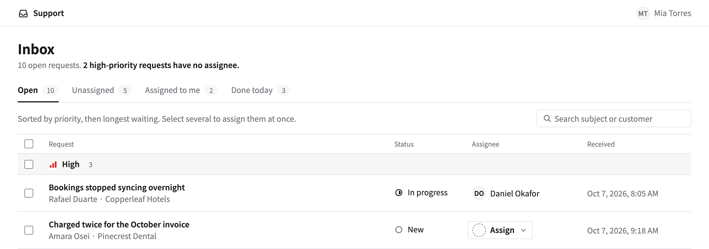

TEMPLATE REPO
Check you're building the right thing, then design it the way your team would — with AI agents like Claude Code or Codex.
github.com/sadakoa/AI-design-harness
WHY
What we know about users and our design rules usually live in people's heads. The harness writes both down as small files, plus five skills (saved instructions like /frame) and a check script, so an AI agent can follow them.
AI Design Harness
2
WHAT YOU GET
A framing first, then about three clickable mockups, a recommendation and a spec on one HTML page, reviewed against your rules. Your team still decides, and builds it.

AI Design Harness · example: examples/support-inbox
3
HOW IT FLOWS
Frame
/frame
Right thing?
Build
/design-builder
Options and a spec
Review
/design-review
Against your rules
Your team
Decides and ships
product/
Users, jobs,
decisions
design-system/
Tokens, rules,
components
Promote
/promote-feedback
Owners decide
Log
work/feedback.md
What we learned
reads
reads
findings
real use
weekly
design
product
AI Design Harness
4
IDEA 1
Before any design, /frame reads the PRD against product/: who it's for, which job, which decisions and constraints. Only a go reaches design.
Every user and job in product/ is marked fact, hypothesis or open, so a PRD built on a guess gets caught.
AI Design Harness
5
IDEA 2
Each folder's INDEX.md says which file answers what, and what to read for each task.
AI Design Harness
6
IDEA 3
AI Design Harness
7
IDEA 4
Review findings and what real use shows go into one log, marked product (we built the wrong thing) or design (we built it the wrong way).
open
a new finding
An owner decides
AI Design Harness
8
IN PRACTICE
Owners are the people in CODEOWNERS: product owners for product/, design owners for design-system/.
AI Design Harness
9
START
For whoever sets it up. You need Claude Code or Codex, Node 20 or later, and git.
1
Use the repo as a template, or copy it into your product repo
2
Run /bootstrap on your product, with or without a design system
3
Check its drafts: users, jobs and your colors
4
Write a short PRD for one screen
5
Run /design-builder with it, then open the proposal
Built on ideas from Canary's NestUI and Reiwa Travel's design-builder write-up
10
NEXT
[Name] writes a short PRD and runs /design-builder, which frames it first. Then we look at the framing and the proposal together. Anything that could apply elsewhere goes into the log.
AI Design Harness
11
APPENDIX
01
Frame it
Runs /frame if there's no framing yet
02
Define the problem
Whose job (U-, J-) gets better, and how
03
Ask you
Only what changes the design (max 5)
04
Research
Approved screens first, then others
05
Explore
About three clickable mockups, for a screen or a flow
06
Recommend
Pick one, tie it to a principle
07
Write up
Everything on one HTML page
08
Review
Run design-review, then share it with you
AI Design Harness
12
APPENDIX
● always · ○ when relevant · design-system/INDEX.md. product/INDEX.md has its own: frame reads all of it.
| File | Build | Components | Layout | Copy | Promote |
|---|---|---|---|---|---|
| components/inventory.md | ○ | ● | |||
| tokens/tokens.css | ● | ● | ○ | ||
| tokens/tokens.json | ○ | ||||
| foundations/principles.md | ● | ● | ● | ○ | ● |
| foundations/rules.md | ● | ● | ● | ● | ● |
| foundations/writing.md | ● | ● | ○ | ||
| components/GUIDE.md | ○ | ● | ○ | ||
| components/<name>.md | ○ | ○ | ○ | ||
| patterns/GUIDE.md | ● | ● | ○ | ||
| screens/README.md | ● | ○ | |||
| decisions.md | ● |
AI Design Harness
13
APPENDIX
npm run check runs on your machine and on every pull request.
AI Design Harness
14